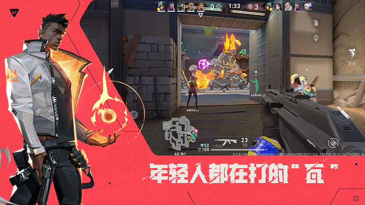
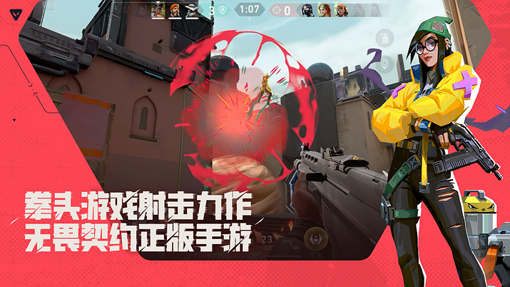

발로란트모바일 한국출시일 아직인가요? 지금 사전예약 되는지 확인해봤어요
발로란트모바일 한국출시일이 대체 언제인지 검색창에 몇 번이나 쳐보신 분들 많으시죠. 저도 궁금해서 이것저것 찾아보다가, 생각보다 확실하게 나온 정보가 별로 없다는 걸 알게 됐는데요.
결론부터 말씀드리면 한국 출시일은 아직 공식적으로 나온 게 없고, 사전예약도 지금 당장 할 수 있는 공식 창구는 없는 상태예요. 대신 지금까지 확인된 사실이랑, 지금 상황에서 할 수 있는 것들을 오늘 한 번 정리해볼게요.
발로란트모바일이 정확히 어떤 게임이에요?
발로란트모바일은 이름 그대로 '발로란트'의 모바일판인데요. 원작 발로란트는 라이엇 게임즈가 만든 5대5 전술 슈팅 게임으로, 요원마다 다른 고유 스킬을 쓰면서 팀 단위로 싸우는 히어로 슈팅에 가깝습니다. PC로 해보신 분들이라면 익숙한 그 감각을 폰으로 옮긴 버전이라고 보시면 돼요.
개발은 라이엇 게임즈가 주도하되 중국 서비스판은 텐센트 산하 라이트스피드 스튜디오와 함께 만들었고, 중국 서비스도 텐센트가 맡는 구조예요. 플랫폼은 안드로이드와 iOS 둘 다고, 엔진은 언리얼 엔진을 쓴다고 알려져 있는데요. 폰 화면에서 조준선을 맞추고 스킬을 타이밍 맞춰 쓰는 게 원작보다 훨씬 손이 많이 갈 것 같긴 하네요.

폰 화면에서도 원작 특유의 전술 슈팅 감각을 살리려 한 티가 나요.
이미지 출처: 게임메카 · 네이버 본문엔 받아서 재업로드 권장
지금 어디까지 나왔나 — 중국이 먼저 열렸어요
발로란트모바일은 이미 한 지역에서는 정식으로 문을 열었어요. 바로 중국인데요, 2025년 8월 19일 중국 정식 출시가 이뤄졌고, 그보다 나흘 앞선 8월 15일부터 사전 다운로드가 풀렸습니다. 여기서 헷갈리면 안 되는 게, 이건 어디까지나 중국 한정 출시라는 점이에요. 중국에서 먼저 나왔다고 해서 한국 일정이 같이 정해진 건 절대 아니거든요.
중국 서비스는 텐센트 게임즈가 유통을 맡았고, 3년 동안 15억 위안을 투자하겠다는 계획도 함께 나왔더라고요. 사전예약에만 6,000만 명이 몰렸다고 하니 규모 자체는 꽤 큰 편이죠. 실제 중국 앱 승인은 2024년 6월 5일에 났다고 하니까, 승인부터 정식 출시까지 1년 넘게 걸린 셈인데요.
중국판 발로란트모바일이 8월 19일 정식 출시를 알리는 공식 이미지예요.
이미지 출처: 게임메카 · 네이버 본문엔 받아서 재업로드 권장
출시 시점 기준으로는 요원 18종, 폭파 모드 맵 7종에 모바일 오리지널 팀 데스매치 맵 2종까지 더해 맵만 총 9종, 게임 모드는 10종을 지원한다고 해요. 원작에서 인기 있던 요원과 맵이 대부분 옮겨온 데다 모바일에서만 즐길 수 있는 콘텐츠도 따로 얹은 셈이라 볼륨 자체는 나쁘지 않아 보이네요.

실제 인게임 전투 장면인데, 스킬 이펙트가 화려하게 들어가는 편이에요.
이미지 출처: 게임메카 · 네이버 본문엔 받아서 재업로드 권장
이렇게 국가마다 순서를 두고 하나씩 여는 방식은 규모가 큰 모바일 게임에서 드문 일은 아니에요. 다만 지금 확인되는 건 딱 '중국이 먼저 열렸다'까지고, 다음 순서가 어디인지·언제인지는 아직 공개된 게 없습니다.
그래서 발로란트모바일 한국출시일은 언제예요?
가장 궁금하실 부분일 텐데요, 결론은 간단해요. 한국 정식 출시일은 현재 공식적으로 발표된 게 없습니다. 라이엇이나 발로란트모바일 공식 채널 어디에서도 한국은 물론 글로벌 정식 출시일을 확정해서 밝힌 적이 아직 없는데요.
해외 매체나 커뮤니티에서는 '2026년 안에는 글로벌로 나오지 않을까', '3~4월쯤 예상된다' 같은 얘기가 종종 도는데, 이건 전부 매체와 커뮤니티가 자체적으로 내놓은 추정일 뿐 공식 발표가 아니라는 걸 짚고 넘어가야 할 것 같아요. 저도 이런 추정 글을 몇 개 봤는데, 근거를 따라가 보면 결국 '중국 출시 후 통상 이 정도 텀을 두더라'는 경험적 추측에 가깝더라고요. 참고 삼아 볼 순 있어도 확정된 일정처럼 받아들이시면 곤란할 것 같습니다.
이 정도로 큰 IP인 만큼 한국 출시 자체가 없을 가능성은 낮다고 보이지만, 시점을 지금 단정 짓기는 어려운 게 사실이에요. 새 소식은 공식 채널이 제일 빠르니, 그쪽을 같이 봐두시면 돼요.
지금 확인 가능한 발로란트모바일 사전예약 방법
사전예약도 마찬가지예요. 지금 국내에서 정식으로 사전예약할 수 있는 공식 채널이나 스토어 페이지는 없는 상태입니다. 예전에 구글플레이에 발로란트모바일이 잠깐 등록된 적이 있었는데, 2025년 1월에 다시 내려간 이력이 있어서 지금 검색해도 국내 정식 사전예약 화면은 뜨지 않아요.
지금 검색해보면 국내 정식 등록은 아직 안 된 상태예요.
보통 이런 대형 게임은 정식 사전예약이 열리면 안드로이드는 구글플레이, iOS는 앱스토어에 '사전예약' 또는 '사전등록' 버튼이 따로 생기고, 그 버튼을 누르면 출시일에 자동으로 알림이 오거나 바로 설치가 되는 방식으로 진행되는 경우가 많아요. 발로란트모바일도 한국 서비스가 확정되면 이런 형태로 창구가 열릴 가능성이 높습니다.
그럼 지금은 뭘 할 수 있냐 싶으실 텐데요, 우선 라이엇이나 발로란트모바일 공식 채널을 팔로우해두시는 게 제일 확실해요. 공지가 뜨면 가장 빠르게 뜨는 곳이 결국 공식 채널이거든요. 그리고 시간 여유가 되신다면 PC나 콘솔로 원작 발로란트를 먼저 찍먹해보시는 것도 나쁘지 않은 선택이에요. 요원 스킬 조합이나 맵 구조, 전술 슈팅 특유의 템포를 미리 익혀두면 모바일판이 나왔을 때 적응이 훨씬 빠를 거예요.
한 가지만 당부드리고 싶은 게, 인터넷에 떠도는 APK 파일을 직접 설치하거나 VPN을 우회해서 중국판을 억지로 깔아보는 건 추천드리지 않아요. 정식 경로가 아니다 보니 계정이 정지될 위험도 있고, 한국어 지원도 안 되는 중국판 그대로라 제대로 즐기기도 애매하거든요. 조금 답답하더라도 정식 창구가 열릴 때까지 기다리시는 게 결국 제일 안전한 방법이에요.
기다리는 동안 원작으로 감 잡아두는 것도 나쁘지 않아요.
그래서 지금은 발로란트모바일이 중국에서는 이미 문을 열었지만, 한국은 출시일도 사전예약도 전부 미정인 상태라는 게 팩트예요. 원작으로 미리 감 잡아두거나 공식 채널 팔로우해두는 정도가 할 수 있는 최선인 것 같네요. 공식 소식 뜨면 저도 바로 확인해서 다시 챙겨드릴게요.